- Object ID: 00000018WIA30084C20GYZ
- Topic ID: id_2008416 Version: 2.15
- Date: May 2, 2023 4:18:27 PM
Stripping gradient cables
This section provides instructions for exposing the cable braid and cutting the cables to length.
About this task
| Warning | |
|---|---|
Ferrous material hazard The crimping tools are ferrous and should not be taken into the scan room. All cutting and crimping should be done outside of the scan room when the magnet is ramped. | |
| Notice | |
|---|---|
Maintain some slack for the gradient cables on the cable tray before cutting to length. | |
Procedure
- Install the large hook onto the Greenlee 1903 wire stripper supplied in the GE HealthCare Gradient Cable Tool Kit.
- While pushing up on the small hook, push the stem of the large hook into the hook release until a you hear a click.
- Remove the small hook.
- Put the large hook into the stripper until you hear a click.
Figure 1. Installing a large hook 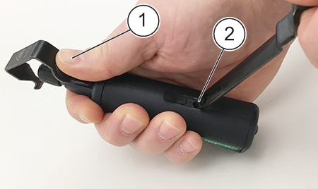
1 Push up on small hook 2 Hook release, stem of large hook Note Give some slack to the cables before cutting to length. Slack is necessary for re-termination, if required. - Put the stripper at the end with the blade next to the outer jacket. Rotate the collar to adjust the blade depth to match the thickness of the outer insulation, making sure the blade will not cut into the braid layer.
Figure 2. Adjusting blade depth 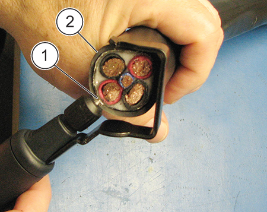
1 Blade 2 Outer insulation - Turn the blade to the -- mark. Lift the spring-loaded hook and put the stripper on the desired position.
- Turn the stripper clockwise around the outer jacket. Important If the blade adjustment is done with the stripper blade in contact with the jacket, the blade may be damaged.
Figure 3. Turning the stripper 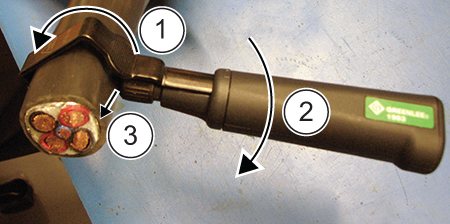
1 Rotate the tool around the jacket 2 Rotate the blade 90⁰ 3 Cut the jacket lengthwise - Pull back on the handle until the blade is clear of the jacket or remove the stripper from the cable.
- With the blade clear of the jacket, rotate the blade 90⁰ (turn the handle from -- mark to | mark). Let the blade re-enter the material and cut the jacket lengthwise to the end of the cable.
- Remove the outer jacket.
- Remove the foil shield to expose the braid shield.
Figure 4. Foil shield and braid shield 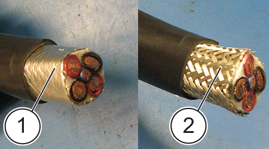
1 Foil shield 2 Braid shield - Carefully cut the braid shield using a diagonal head semi-flush or shear wire cutter. Do not use a knife as this may cut into the wires.
Figure 5. Cutting the braid shield 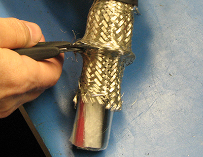
- Remove the white gradient cable packing to the end of the braided shield.
Figure 6. Cable packing 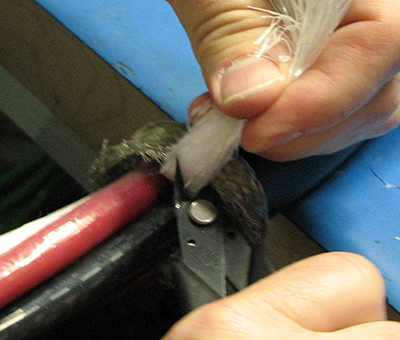
- Wrap electrical tape around the end of the braid to keep the braid from unraveling.
Figure 7. Wrapping braid in tape 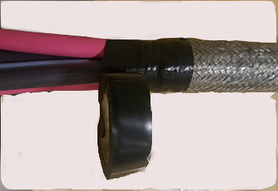
- Measure the excess cut cable. Tell the GE HealthCare field engineer of the length of the excess cut cable. The data will be used for future gradient cable design.
- Discard the remaining cable.
- Put the correct lug next to each cable and mark the bellmouth depth to identify how much insulation to remove on each cable. Note Lug color/type will be different depending on the cable thickness and application.
Figure 8. Identifying length 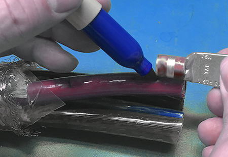
- On the Greenlee 1903 wire stripper, replace the large hook, used on the outer jacket, with the small hook.
Figure 9. Setting blade depth 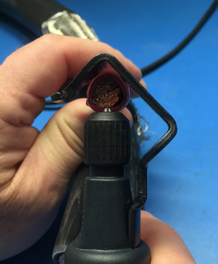
- Put the stripper over the end of the cable.
- Identify the correct blade depth to avoid gradient cable strand damage. Turn the silver blade head in a clockwise or counterclockwise direction to decrease or increase the top blade cutting depth.Important Do not cut into the cable. Cut or damaged cable must be replaced.
- Turn the blade to the -- mark. Lift the spring-loaded hook and put the stripper on the desired location. Turn the tool clockwise once around the cable until the insulation is sufficiently penetrated.
Figure 10. Tool position 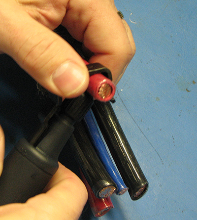
Note Do not touch the wire strands with the blade. - Pull back on the handle until the blade is clear of the jacket or remove the stripper from the cable.
Figure 11. Removing the insulation 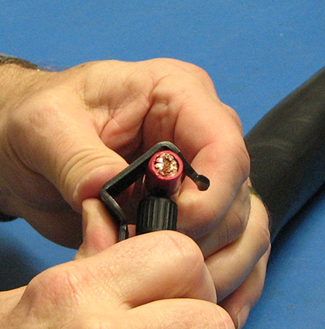
- With the blade clear of the jacket, rotate the blade 90⁰ (turn the handle from -- mark to | mark). Allow the blade to re-enter the material and cut the jacket lengthwise to the end of the cable.